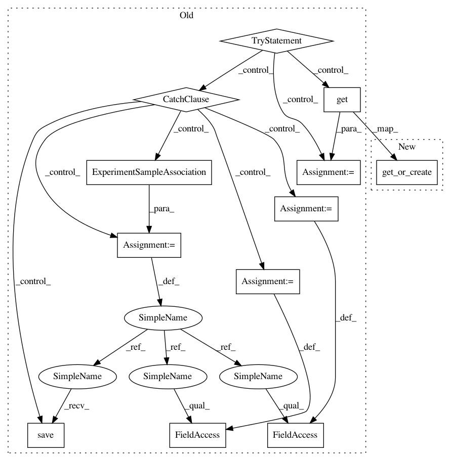

7636a32728d1d6205d4f6ceeea8e6f2d6967b81f,foreman/data_refinery_foreman/surveyor/geo.py,GeoSurveyor,create_experiment_and_samples_from_api,#GeoSurveyor#Any#,59
Before Change
original_file_sample_association.original_file = original_file
original_file_sample_association.save()
try:
assocation = ExperimentSampleAssociation.objects.get(experiment=experiment_object, sample=sample_object)
except ExperimentSampleAssociation.DoesNotExist:
association = ExperimentSampleAssociation()
association.experiment = experiment_object
association.sample = sample_object
association.save()
// These supplementary files _may-or-may-not_ contain the type of raw data we can process.
for experiment_supplement_url in gse.metadata.get("supplementary_file", []):
try:
original_file = OriginalFile.objects.get(source_url=experiment_supplement_url)
After Change
all_samples.append(sample_object)
ExperimentSampleAssociation.objects.get_or_create(
experiment=experiment_object, sample=sample_object)
continue
except Sample.DoesNotExist:
organism = Organism.get_object_for_name(sample.metadata["organism_ch1"][0].upper())
In pattern: SUPERPATTERN
Frequency: 3
Non-data size: 12
Instances
Project Name: AlexsLemonade/refinebio
Commit Name: 7636a32728d1d6205d4f6ceeea8e6f2d6967b81f
Time: 2018-06-06
Author: kurt.wheeler91@gmail.com
File Name: foreman/data_refinery_foreman/surveyor/geo.py
Class Name: GeoSurveyor
Method Name: create_experiment_and_samples_from_api
Project Name: AlexsLemonade/refinebio
Commit Name: 7636a32728d1d6205d4f6ceeea8e6f2d6967b81f
Time: 2018-06-06
Author: kurt.wheeler91@gmail.com
File Name: foreman/data_refinery_foreman/surveyor/geo.py
Class Name: GeoSurveyor
Method Name: create_experiment_and_samples_from_api
Project Name: AlexsLemonade/refinebio
Commit Name: 7636a32728d1d6205d4f6ceeea8e6f2d6967b81f
Time: 2018-06-06
Author: kurt.wheeler91@gmail.com
File Name: foreman/data_refinery_foreman/surveyor/sra.py
Class Name: SraSurveyor
Method Name: _generate_experiment_and_samples
Project Name: AlexsLemonade/refinebio
Commit Name: 7636a32728d1d6205d4f6ceeea8e6f2d6967b81f
Time: 2018-06-06
Author: kurt.wheeler91@gmail.com
File Name: foreman/data_refinery_foreman/surveyor/array_express.py
Class Name: ArrayExpressSurveyor
Method Name: create_samples_from_api